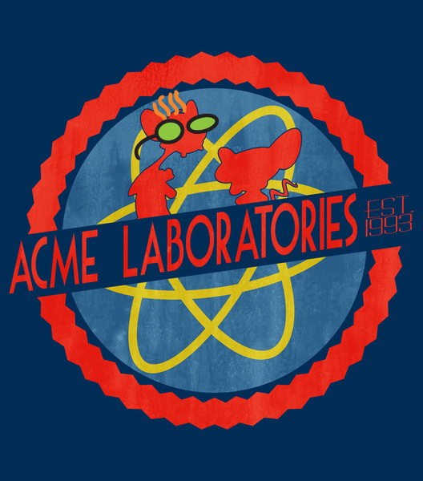

Monitoring Logs with Elastic Search
We are Acme Labs part of WSB

Ashish Shubham
Kevin Zhang
Jared Lera
What's the problem?
Well, problems are not detected until our customers detect them first.
Current Scenario:
Customers encounter an issue
A select few customers call into C3
C3 escalates to ATS
ATS escalates to the devs
Devs fix issue
Ideal Scenario:
Monitor finds an issue
Appropriate team gets notified
Team fixes issue
Message can be posted on web app
If customer calls in, C3 has an answer
What is out there:
- Elastic Search
- Log Stash
- Kibana
- New Relic
- Stats D
- SQL Reporting Services
- Hadoop
What is Elastic Search
- Can be used as a document based NoSQL datastore, as one stop shop for storing searching and statistics
- Out of the box horizontally scalable
- Has HTTP Rest query interface - JSON
What is Log Stash
- A tool used to collect logs, parse them, store them for searching
- Works with n number of input/output, easy to configure
- Allows for unstructured JSON logs, creates a dynamic schema that it is good for logs
What is Kibana
- A dashboard that lets you analyze your logs
- Make your own dashboard using the Lucene search query
- Making your own dashboard
Setting up ELK
- NEED TO ADD LINK TO CONFLUENCE PAGE
What is next
- Migrate logs to Hadoop
- Use corporate Elastic Search
- Improve Dynamic Thresholds
- Open source Monitor App